Este manual descreve cada tela, campo, botão e regra do site, quem pode fazer o quê e como as funções se conectam. Ele vale para qualquer projeto. Os exemplos usam o projeto de demonstração Awake Home Decor.
O Campaign Forge reúne em um só lugar o trabalho de uma agência ao planejar uma campanha: conversa da equipe, tarefas, decisões, criação para Instagram, simulações de investimento e resultados, pesquisa, documentos acadêmicos e apresentação final.
O site foi feito para trabalho acadêmico e nunca inventa dados. Isso aparece de várias formas:
| Elemento | Significado |
|---|---|
| Faixa de aviso | SIMULAÇÃO ACADÊMICA — RESULTADOS HIPOTÉTICOS. NÃO REPRESENTAM DESEMPENHO GARANTIDO. Aparece em toda tela, documento, slide e arquivo CSV que contenha números simulados. |
| Etiqueta "hipotético" | O número saiu de uma simulação, não de dado real. |
| Etiqueta "real" | O número foi informado manualmente pela equipe a partir de dados reais (ex.: Dashboard de KPIs), sempre com a fonte. |
| Origem da premissa | Cada número que alimenta um simulador tem uma etiqueta clicável: Briefing confirmado, Fonte externa documentada (exige referência), Hipótese da equipe, Cálculo ou Dado real informado. |
| "Pendente de preenchimento/validação" | Marca uma lacuna: informação que ainda falta ou não foi confirmada. Aparece destacada em amarelo nos documentos e slides, e o editor conta quantas lacunas restam. |
| Orçamento único × mensal | São modos diferentes. O sistema nunca multiplica um orçamento único por 12 meses automaticamente. |
| Integrações | Pixel, API de Conversões etc. só podem ser marcados como "validados" com evidência registrada. Nenhuma integração é declarada ativa sem prova. |
Cada pessoa tem um papel na agência, e esse papel vale para todos os projetos dela. Os papéis vão do menor para o maior acesso:
| Papel | O que pode fazer |
|---|---|
| Visualizador | Lê tudo e comenta. Também pode enviar mensagens no chat, criar grupos e conversas privadas, sugerir alterações em documentos e exportar documentos e a apresentação. Não envia arquivos e não edita conteúdo. Uso típico: professor ou cliente. |
| Integrante | Tudo do Visualizador, mais: cria e edita conteúdo colaborativo (tarefas, publicações, cenários, documentos…), envia arquivos e solicita aprovações. |
| Coordenador | Tudo do Integrante, mais: aprovações finais, decisões, verba aprovada, convites (até o papel de Coordenador) e acesso à Auditoria. Pode excluir qualquer item. |
| Administrador | Tudo, incluindo configurações do projeto e da marca, papéis da equipe, remoção de integrantes e exclusão do projeto. Pode convidar com qualquer papel. |
Na primeiríssima visita ao site, quando ainda não existe nenhum usuário, abre-se a tela Configuração inicial. Ela cria o administrador e a agência.
| Campo | O que preencher |
|---|---|
| Seu nome | Nome do administrador. |
| Será o login do administrador. | |
| Senha (mín. 10, letras e números) | No mínimo 10 caracteres, com letras e números. |
| Agência / equipe | Nome da agência, ex.: Awake. |
O botão Criar administrador conclui. Depois disso a tela deixa de existir e todos entram pelo login ou por convite.
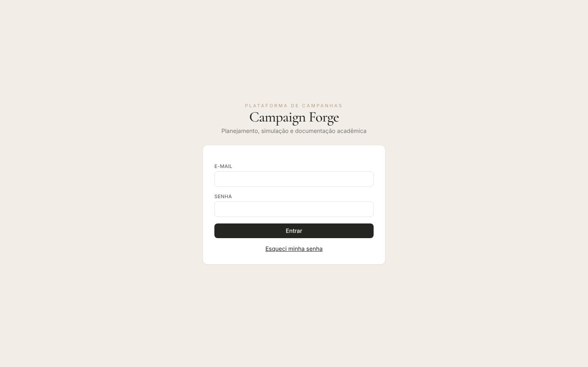
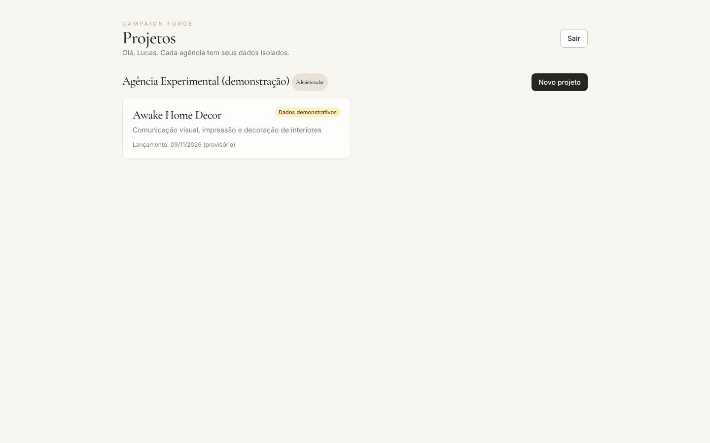
Depois do login aparece a lista de projetos, agrupada por agência e com o seu papel. Cada cartão mostra o nome, o segmento, a data de lançamento (confirmada ou provisória) e, se for o caso, o selo "Dados demonstrativos". Clique no cartão para entrar no projeto.
Só administradores e coordenadores criam projetos. O botão é Novo projeto.
| Campo | Significado |
|---|---|
| Marca / cliente * | Nome da marca (2 a 120 caracteres). |
| Segmento | Ramo de atuação, ex.: Decoração de interiores. |
| Data de lançamento (opcional) | Início da campanha. Usada no Dashboard, no calendário e como início padrão das simulações. |
| Verba inicial (R$) | Padrão R$ 10.000. É a base da sugestão de verba 30/60/10 e dos simuladores. |
| Ticket médio (R$) | Padrão R$ 350. Valor médio de uma compra, usado nos cálculos de receita. |
Tudo pode ser alterado depois em Configurações. Ao criar o projeto, o site já prepara um perfil de Instagram, canais de chat e uma proposta inicial de verba (não aprovada).
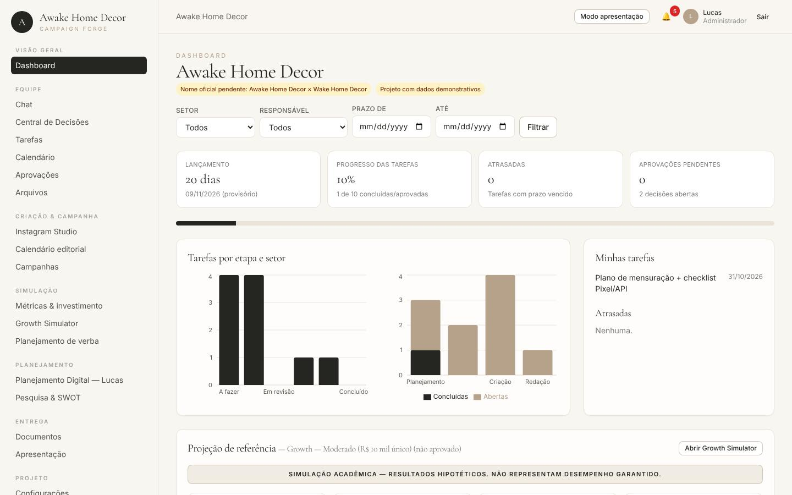
| Grupo | Telas |
|---|---|
| Visão geral | Dashboard |
| Equipe | Chat, Central de Decisões, Tarefas, Calendário, Aprovações, Arquivos |
| Criação & Campanha | Instagram Studio, Calendário editorial, Campanhas |
| Simulação | Métricas & investimento, Growth Simulator, Planejamento de verba |
| Planejamento | Planejamento Digital, Pesquisa & SWOT |
| Entrega | Documentos, Apresentação |
| Projeto | Configurações, Auditoria |
No topo do menu ficam a logo e o nome da marca. Clicar nele volta à lista de projetos. No celular, o menu abre pelo botão ☰.
Resumo do projeto: prazo até o lançamento, andamento das tarefas, pendências e a projeção de referência.
Setor, Responsável, Prazo de … até, com os botões Filtrar e Limpar. Afetam os números de tarefas.
| Cartão | O que mostra |
|---|---|
| Lançamento | Dias até o lançamento (ou "Lançado"/"A definir"), com a data e se ela está confirmada ou é provisória. |
| Progresso das tarefas | % de tarefas concluídas ou aprovadas, com barra de progresso. |
| Atrasadas | Tarefas com prazo vencido. |
| Aprovações pendentes | Solicitações aguardando decisão, e quantas decisões estão abertas. |
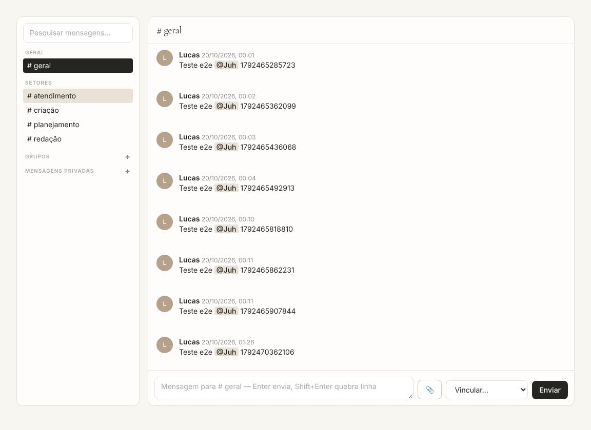
| Canal | Quem vê |
|---|---|
| Geral | Toda a equipe. |
| Setores | Toda a equipe. Um canal por setor: Planejamento, Atendimento, Criação, Redação. |
| Grupos | Só os participantes. Crie com + → Novo grupo, informando Nome do grupo e marcando os Participantes. |
| Mensagens privadas | Só as duas pessoas. Crie com + → Nova conversa privada e escolha Com quem?. Se a conversa já existir, ela é reaberta. |
@nome (primeiro nome) para chamar alguém, ou @todos / @all para chamar todos.O campo Pesquisar mensagens… procura em todos os canais que você pode ver (até 50 resultados). Fechar busca volta ao canal.
Mensagens novas aparecem sozinhas, sem recarregar a página. Cada canal mostra as 200 mensagens mais recentes.
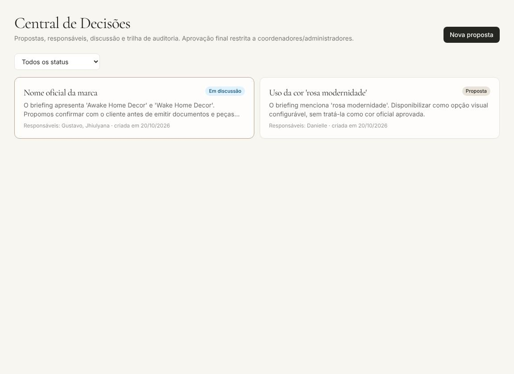
Registra propostas que precisam de decisão da equipe, com discussão e histórico.
| Campo | Significado |
|---|---|
| Título | Resumo da decisão. |
| Proposta * | Descrição do que se propõe. |
| Prazo para decidir | Data limite. Aparece no Calendário. |
| Responsáveis | Pessoas que devem opinar (até 20). Elas são notificadas. |
| Justificativa / observação | Motivo registrado ao mudar o status. |
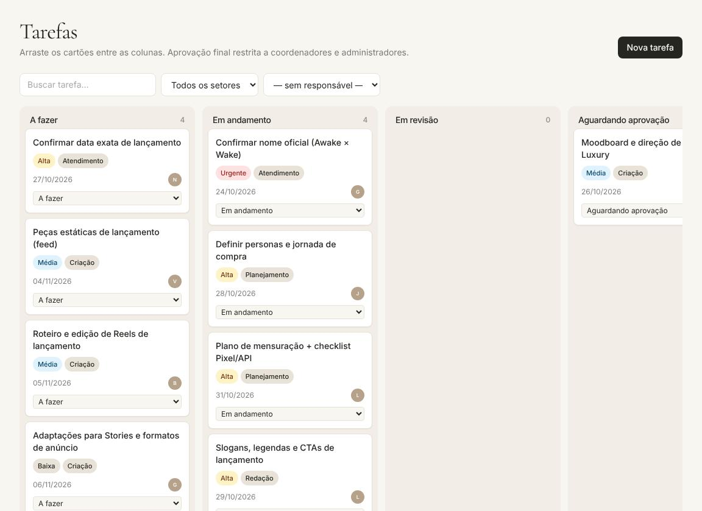
| Campo | Significado |
|---|---|
| Título * | 2 a 200 caracteres. |
| Descrição | Detalhes da tarefa. |
| Status | Coluna atual. |
| Prioridade | Baixa, Média (padrão), Alta ou Urgente. |
| Responsável | Integrante da equipe. É notificado ao ser atribuído. |
| Setor | Planejamento, Atendimento, Criação ou Redação. |
| Prazo | Data de entrega. Aparece no Calendário. |
| Depende de | Outras tarefas que precisam terminar antes. Uma tarefa não pode ser aprovada nem concluída antes das dependências. |
| Checklist | Subitens (até 100): Novo item → Adicionar. |
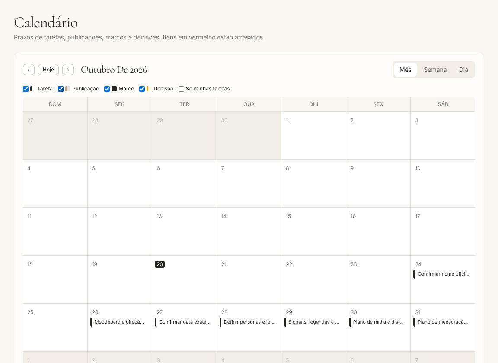
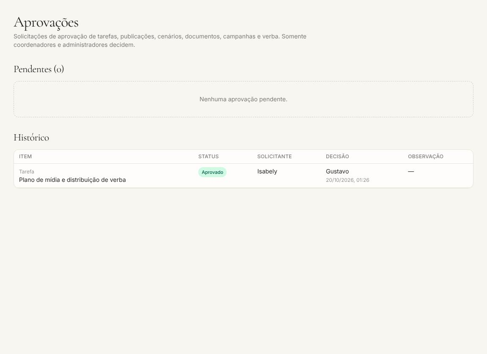
Concentra os pedidos de aprovação de tarefas, publicações, cenários, documentos, campanhas e verba. Em cada pendente, o coordenador pode escrever uma Observação (opcional) e escolher Aprovar, Pedir ajustes ou Reprovar. O Histórico lista as decisões já tomadas.
| Item | Ao solicitar | Ao aprovar | Ao reprovar / pedir ajustes |
|---|---|---|---|
| Tarefa | Aguardando aprovação | Aprovado | Em andamento |
| Publicação | Revisão Atendimento | Aprovado | Redação |
| Campanha | Em revisão | Aprovada | Planejamento |
| Documento | Em revisão | Aprovado (versão travada) | Rascunho |
| Cenário | Em revisão | Aprovado | Rascunho |
| Verba | — | Aprovada (a anterior vira "Substituída") | — |
Não é possível abrir dois pedidos para o mesmo item. Quem solicitou é notificado da decisão.
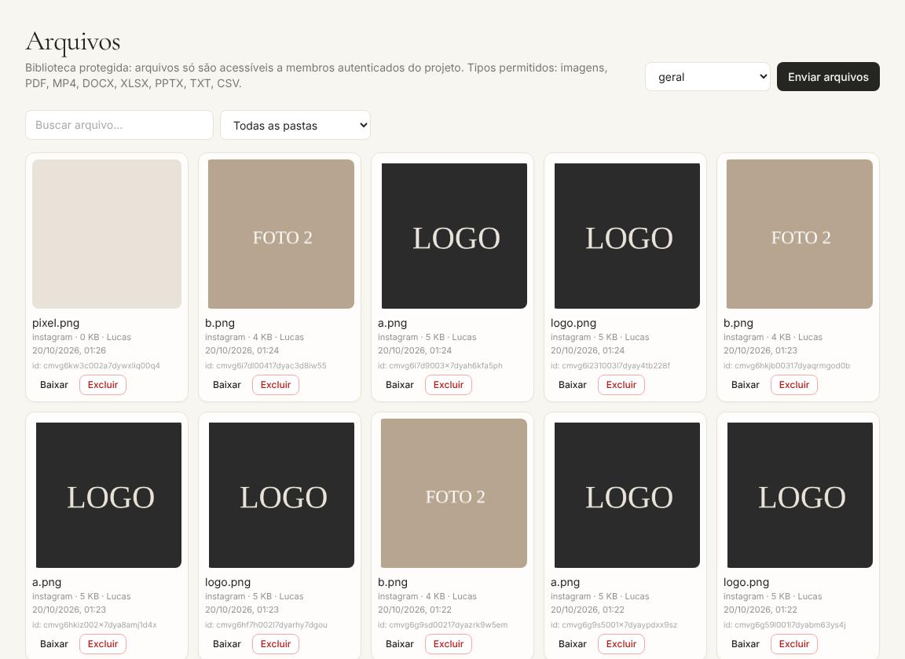
Simulador do perfil da marca, sem ligação com conta real. Você envia a logo, monta o feed com imagens, carrosséis, Reels e stories, e vê como a campanha apareceria no app, inclusive como anúncio.
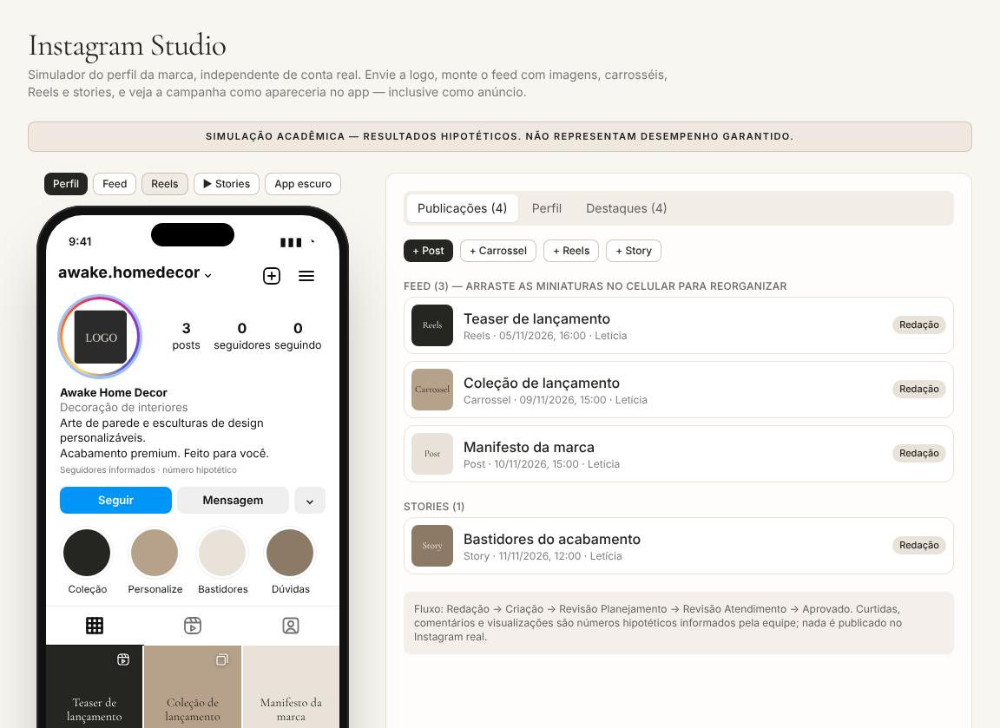
O painel da direita tem três abas: Publicações, Perfil e Destaques. Tudo o que você edita aparece na hora no celular à esquerda.
Botões acima do aparelho: Perfil, Feed, Reels, ▶ Stories e App escuro/App claro.
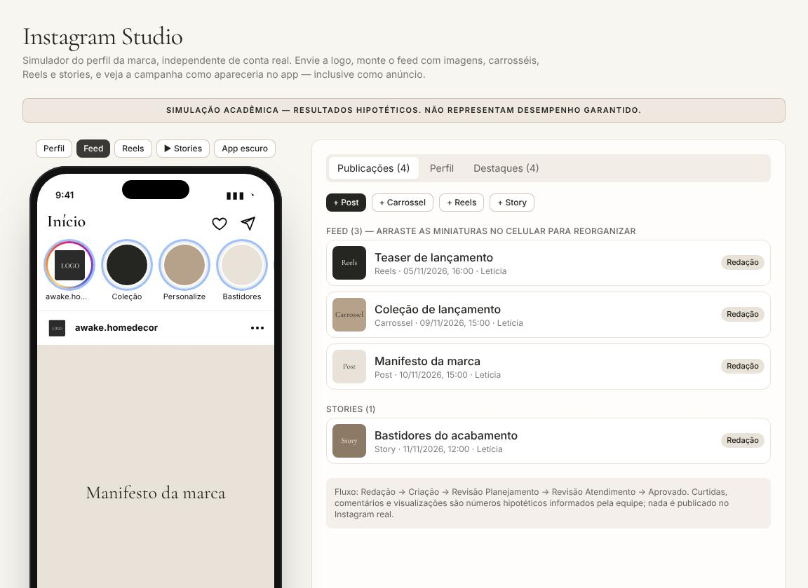
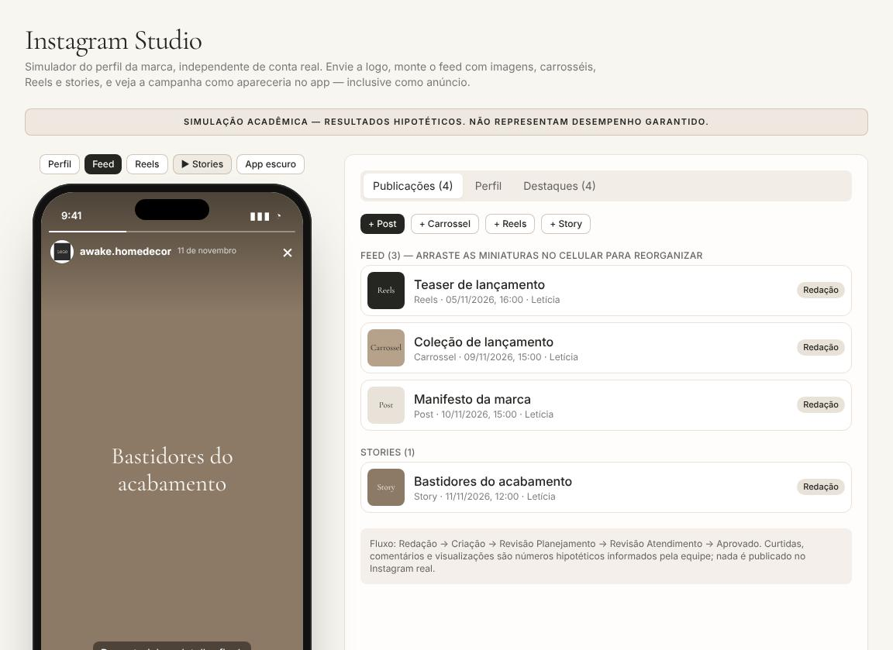
| Tela / ação | Como funciona |
|---|---|
| Perfil | Foto, contadores de posts, seguidores e seguindo, bio, destaques e grade. O botão "Seguir" muda para "Seguindo" apenas na simulação. |
| Reorganizar o feed | Arraste as miniaturas da grade. A nova ordem é salva para toda a equipe. |
| Abrir post | Toque na miniatura. Reels abrem na tela de Reels. |
| Curtir | Dois cliques na imagem, ou o coração. Curtir e salvar valem só na tela e não alteram os números hipotéticos. |
| Carrossel | Deslize ou use ‹ ›. Mostra contador n/N e pontos. |
| Anúncio | Mostra "Patrocinado" no lugar da localização e uma barra com o botão do anúncio. |
| Stories | 5 segundos cada, com barras de progresso. Toque na lateral direita/esquerda para avançar/voltar, segure para pausar e use × para fechar. Tocar num destaque do perfil reproduz os stories dele. |
| Grade | Abas de grade, Reels e marcados. Itens que ainda não foram aprovados mostram a etiqueta "rascunho". |
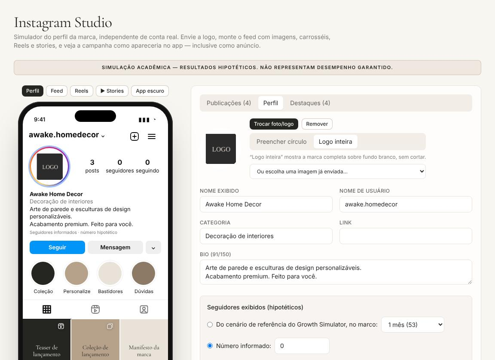
| Campo | Significado |
|---|---|
| Foto de perfil | Enviar foto ou logo (PNG, JPEG, WEBP), Remover, ou Ou escolha uma imagem já enviada…. |
| Preencher círculo / Logo inteira | "Preencher círculo" corta a imagem para caber no círculo. "Logo inteira" mostra a marca completa sobre fundo branco, sem cortar. |
| Nome exibido | Nome em negrito no perfil (1 a 60 caracteres). |
| Nome de usuário | O @ do perfil: até 30 caracteres, com letras, números, ponto e _. |
| Categoria | Ex.: Decoração de interiores. |
| Link | Link da bio. |
| Bio | Até 150 caracteres. O contador fica no rótulo. |
| Seguidores exibidos (hipotéticos) | Do cenário de referência do Growth Simulator, num marco (lançamento, 1, 3, 6 ou 12 meses), ou Número informado manualmente. |
| Seguindo | Número de contas seguidas. |
Botões: Descartar e Salvar perfil.
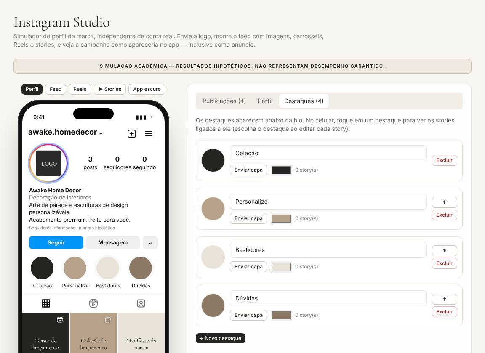
Botões + Post, + Carrossel, + Reels e + Story. As listas mostram o Feed e os Stories, e clicar num item abre o editor.
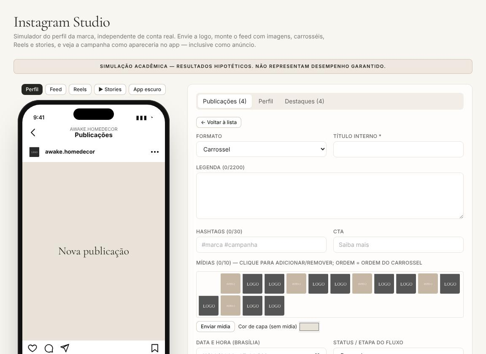
| Campo | Significado |
|---|---|
| Formato | Post, Carrossel, Reels ou Story. |
| Título interno * | Nome de controle da equipe (não aparece no post). Até 120 caracteres. |
| Legenda | Até 2.200 caracteres, como no Instagram. |
| Hashtags | Até 30. |
| CTA | Chamada para ação, ex.: "Saiba mais". |
| Mídias (n/10) | Clique nas imagens/vídeos da biblioteca para adicionar ou remover, ou use Enviar mídia. A ordem de seleção é a ordem do carrossel. Máximo de 10. |
| Cor de capa (sem mídia) | Cor usada enquanto não houver imagem. |
| Data e hora (Brasília) | Quando a publicação iria ao ar. O padrão é o dia do lançamento, às 19h. |
| Status / etapa do fluxo | Ver fluxo abaixo. |
| Objetivo · Produto · Responsável · Campanha | Planejamento da peça e vínculo com uma campanha. |
| Etapa da jornada | Descoberta, Consideração, Decisão, Pós-compra ou Fidelização. |
| Destaque do perfil (story) | Destaque em que o story fica salvo. |
| Localização (demais formatos) | Ex.: São Paulo, Brasil. Aparece no cabeçalho do post. |
| Simular como anúncio | Mostra "Patrocinado" e o Botão do anúncio: Saiba mais, Comprar agora, Enviar mensagem, Ver coleção ou Fale conosco. |
| Curtidas / Comentários / Visualizações (hipotético) | Números informados pela equipe só para a simulação. |
| Nota da versão (opcional) | Explica a mudança, ex.: "ajuste de CTA pedido pelo Atendimento". |
Toda alteração de legenda, hashtags, CTA ou mídias cria uma nova versão automaticamente. Na aba Versões, escolha Versão A e Versão B para comparar: o texto adicionado aparece em verde, o removido em vermelho riscado, e as mídias das duas versões ficam lado a lado.
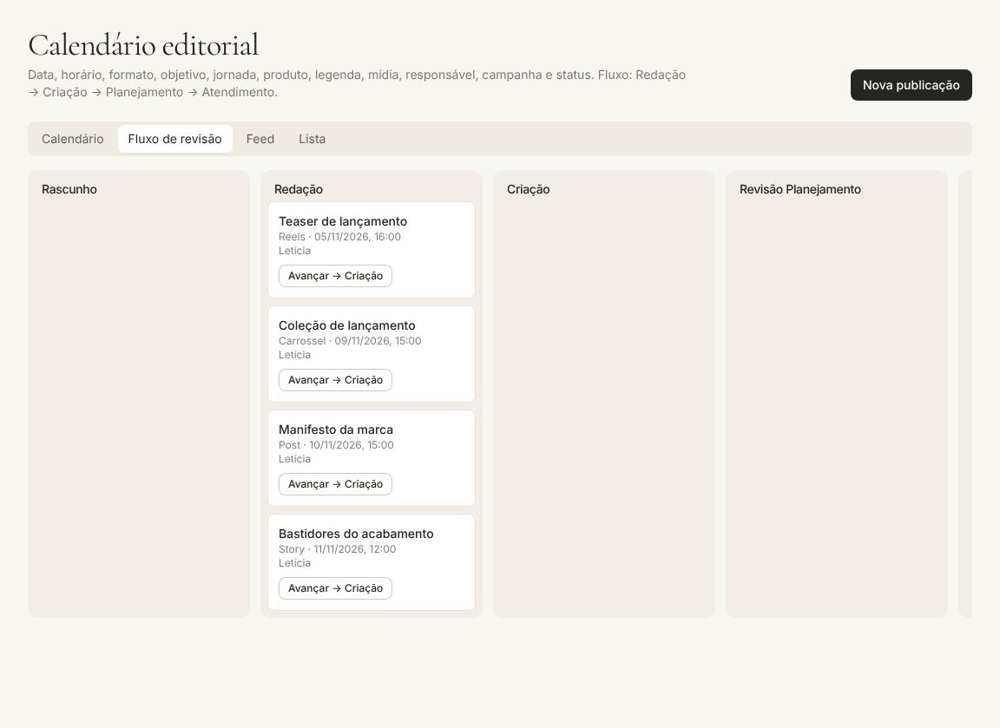
Mostra as mesmas publicações do Instagram Studio, organizadas para o planejamento. Nova publicação abre o mesmo editor do Studio.
| Visão | Uso |
|---|---|
| Calendário | Publicações por mês, semana ou dia. |
| Fluxo de revisão | Colunas por status. O botão Avançar → próxima etapa passa a peça adiante. As etapas Aprovado e Agendado só ficam disponíveis para coordenadores. |
| Feed | O celular simulado. Clicar num post abre o editor. |
| Lista | Tabela com data/hora, formato, título, objetivo, jornada, produto, campanha, responsável e status. |
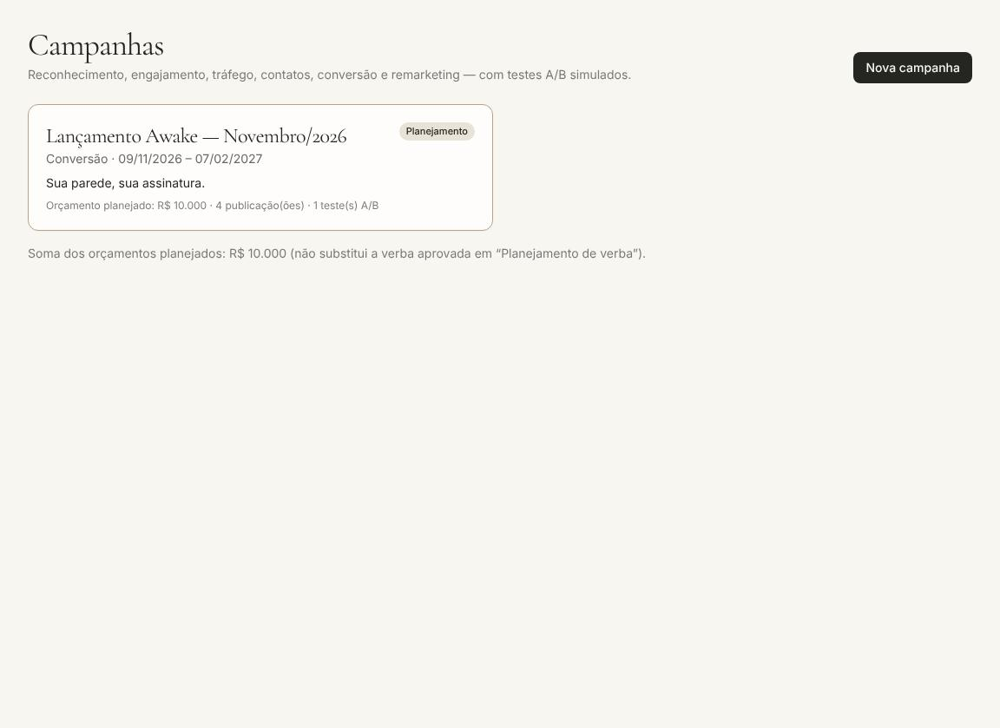
Objetivos possíveis: Reconhecimento, Engajamento, Tráfego, Contatos (leads), Conversão e Remarketing.
| Campo | Significado |
|---|---|
| Nome * | 2 a 160 caracteres. |
| Objetivo | Um dos seis objetivos acima. |
| Público · Segmentação · Posicionamento · Mensagem principal | Estratégia da campanha. |
| Produtos · Canais · Formatos | O que é anunciado, onde e em que formato. |
| Orçamento planejado (R$) | Planejamento da campanha. Não substitui a verba aprovada em "Planejamento de verba". |
| Início · Fim | Período. O fim deve ser posterior ao início. |
| KPIs · Criativos | Indicadores de sucesso e descrição/links das peças. |
| Status · Responsáveis | "Aprovada" exige coordenador. |
Botões: Salvar campanha, Solicitar aprovação e Excluir. Ao excluir, as publicações vinculadas são apenas desvinculadas.
Compara duas hipóteses com a mesma verba e o mesmo CPM. O resultado mostra o que precisaria ser verdade para cada variante vencer, sem prever o vencedor real. Para concluir, valide com um teste real.
| Campo | Significado |
|---|---|
| Variável | O que muda entre A e B: Criativo, Público ou Mensagem. |
| Verba do teste · CPM · Ticket médio | Iguais para as duas variantes. |
| Hipótese | O que a equipe espera e por quê. |
| Variante A / B: CTR % e Conv. % | Taxa de clique e taxa de compra por clique de cada variante. |
Calculado automaticamente para cada variante: impressões (verba ÷ CPM × 1000), cliques, CPC, compras, receita, CPA e ROAS. Também aparecem a diferença de cliques e de compras e a "hipótese mais favorável" (ou "empate"). O limite é de 20 testes por campanha.
Toda premissa tem uma etiqueta colorida. Clique nela para escolher a origem e, se quiser, escrever uma nota:
| Origem | Quando usar |
|---|---|
| Briefing confirmado | O cliente informou e confirmou. |
| Fonte externa documentada | Estudo, relatório ou benchmark publicado. É obrigatório informar a referência (autor, título, URL, data). |
| Hipótese da equipe | Estimativa da equipe ainda não validada. É a origem padrão. |
| Cálculo | Valor derivado de outros. Definido pelo sistema. |
| Dado real informado | Dado medido de verdade. Definido pelo sistema. |
Os campos numéricos aceitam vírgula como separador decimal. Os ícones ? explicam os termos CTR, CPC, CPM, CPA, ROAS, Frequência, Alcance, Engajamento e Sessões.
Os dois simuladores usam a mesma barra para salvar e comparar conjuntos de premissas (cenários).
| Elemento | Função |
|---|---|
| Cenário salvo | Escolhe um cenário existente. |
| Carregar padrão | Conservador, Moderado ou Otimista (tabela abaixo). |
| Salvar alterações | Atualiza o cenário atual, que volta para "Rascunho". |
| Salvar como novo | Pede Nome e Nível (Conservador, Moderado, Otimista ou Personalizado). O autor, a data e a origem de cada número ficam registrados. |
| Duplicar | Cria uma cópia "(cópia)". |
| Comentários | Discussão sobre o cenário. |
| Solicitar aprovação | Envia para Aprovações (só para rascunhos). |
| Excluir | Autor ou coordenador. |
| Premissa | Conservador | Moderado | Otimista |
|---|---|---|---|
| CPM (R$) | 32 | 25 | 18 |
| CTR | 0,8% | 1,2% | 1,8% |
| Adição ao carrinho | 4% | 6% | 8% |
| Início de checkout | 40% | 50% | 60% |
| Conclusão de compra | 45% | 55% | 65% |
| Ticket médio | ticket do projeto × 0,86 | ticket do projeto | ticket do projeto × 1,14 |
A verba padrão é a "Verba inicial" do projeto. O início padrão é a data de lançamento do projeto.
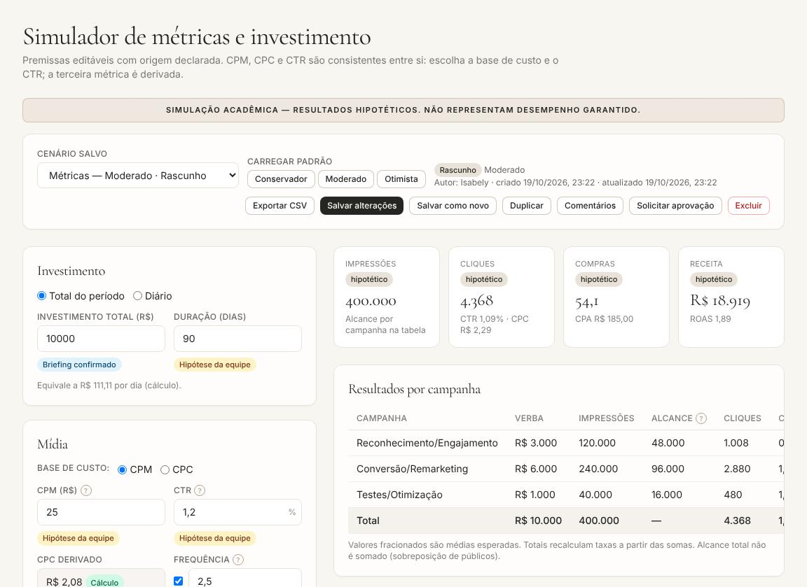
Calcula o resultado de uma verba em um período, com divisão por campanha. CPM, CPC e CTR são sempre coerentes entre si: você escolhe a base de custo e o CTR, e a terceira métrica é derivada.
| Grupo / campo | Significado |
|---|---|
| Investimento | Total do período ou Diário, valor em R$ e Duração (dias). Mostra o equivalente diário ou total. |
| Base de custo | CPM (custo por mil impressões) ou CPC (custo por clique). |
| CTR | % de impressões que viram clique. Maior que 0% e até 100%; acima de 5% aparece um alerta. O CPC ou o CPM é derivado dele. |
| Frequência (opcional) | Média de vezes que cada pessoa vê o anúncio. Sem ela, o alcance não é calculado. |
| Chegada ao site (opcional) | % de cliques que viram sessão no site. Sem ela, o funil parte dos cliques. |
| Adição ao carrinho · Início de checkout · Conclusão de compra | Etapas do funil de compra. |
| Ticket médio (R$) | Valor médio por compra. |
| Distribuição por campanha | Linhas com Campanha, % verba e CTR próprio (em branco usa o CTR geral). A soma deve dar 100%. Padrão: 30% Reconhecimento/Engajamento, 60% Conversão/Remarketing, 10% Testes/Otimização. |
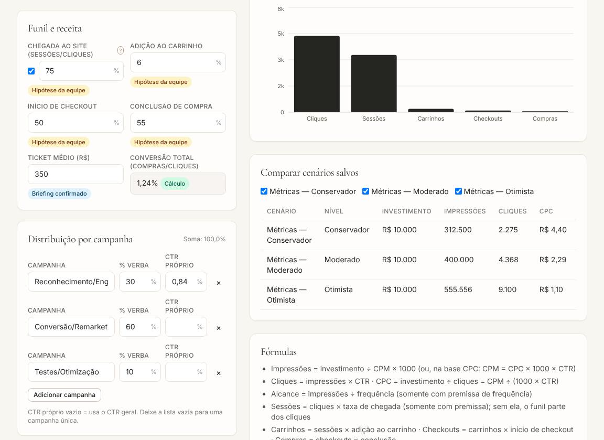
Resultados: impressões, cliques, compras e receita, além da tabela por campanha (verba, impressões, alcance, cliques, CTR, CPM, CPC, sessões, carrinhos, checkouts, compras, receita, CPA, ROAS), com a linha de total recalculada a partir das somas. Também há o gráfico de funil, Comparar cenários salvos, o quadro de Fórmulas e Exportar CSV.
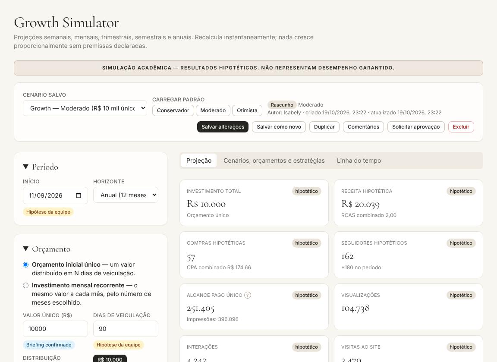
Projeta dia a dia e agrega em semanas, meses, trimestres, semestres e anos. Recalcula na hora. Nada cresce proporcionalmente sem premissas declaradas.
| Grupo | Campos |
|---|---|
| Período | Início e Horizonte: Semanal, Mensal, Trimestral, Semestral, Anual (padrão) ou Personalizado (com data de fim). |
| Orçamento — inicial único | Valor único (R$), Dias de veiculação (padrão 90) e Distribuição: Uniforme, Concentrada no início ou Concentrada no fim. Atalhos de R$ 10/15/20 mil. |
| Orçamento — mensal recorrente | Valor por mês (R$) e Meses com investimento. |
| Mídia paga | CPM inicial, CTR, Tamanho do público (opcional, padrão 400.000), Interações, Visitas ao perfil e Visualizações por impressão. |
| Funil do site | Sessões/clique, Adição ao carrinho, Início de checkout, Conclusão de compra e Ticket médio. |
| Instagram orgânico | Seguidores iniciais, posts e Reels por semana, alcance por post, multiplicador de Reels, visualizações, engajamento, visitas ao perfil, taxa de seguir, clique no link e perda mensal de seguidores. |
| Ajustes não lineares (opcionais) | Saturação: o CTR cai com a frequência acumulada; exige tamanho do público; intensidade k = 0,15. Aumento mensal de CPM: padrão 1%. Variação mensal da conversão. Sazonalidade: multiplicadores de CPM e conversão de janeiro a dezembro, ex.: CPM × 1,3 em novembro (Black Friday). |
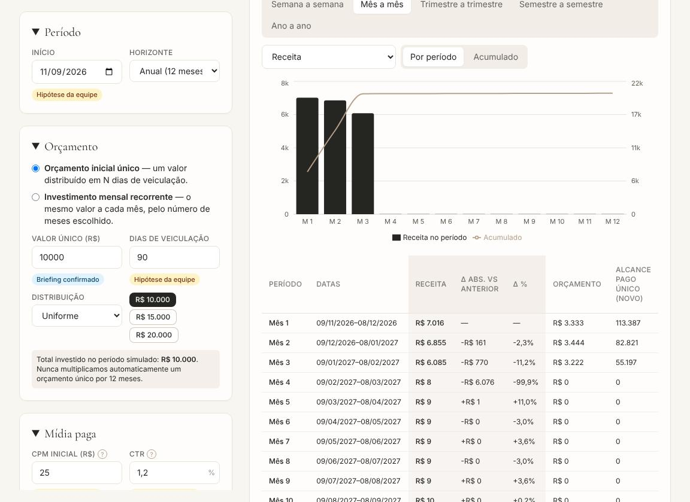
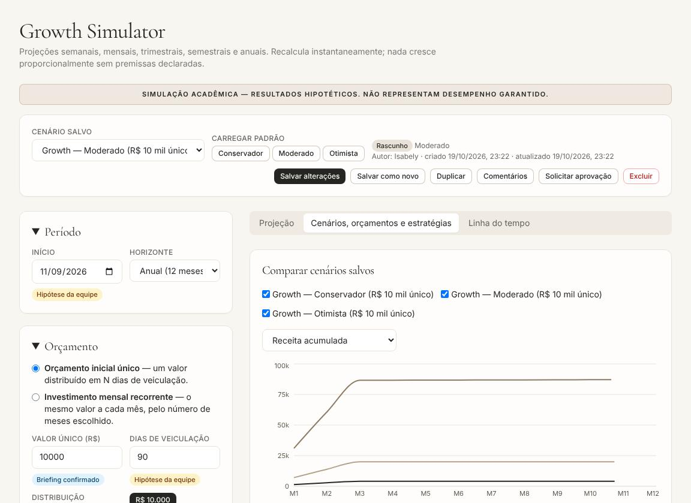
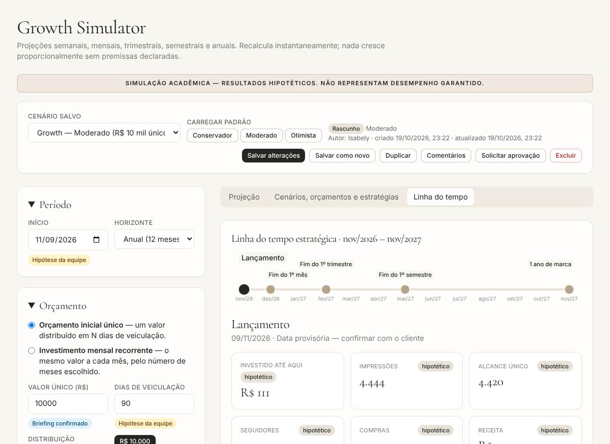
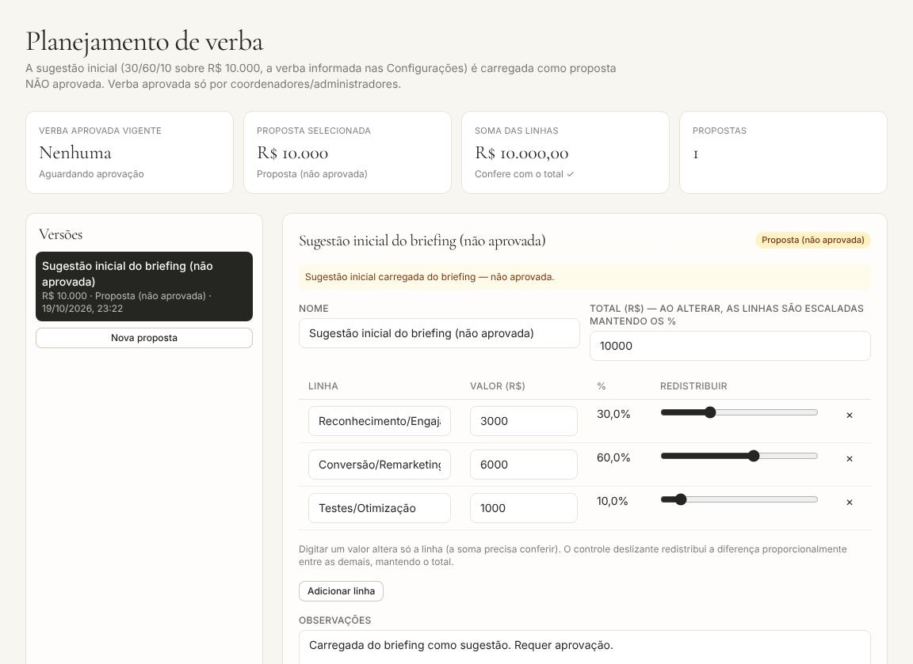
Divide a verba em linhas (ex.: Reconhecimento 30%, Conversão 60%, Testes 10%). Ao criar o projeto, já é carregada uma sugestão inicial 30/60/10, não aprovada.
| Elemento | Função |
|---|---|
| Indicadores | Verba aprovada vigente, proposta selecionada, soma das linhas (confere ✓ ou não ✗) e número de propostas. |
| Versões | Lista das propostas: Proposta (não aprovada), Aprovada ou Substituída. Nova proposta cria outra. |
| Nome | Nome da proposta. |
| Total (R$) | Ao alterar, todas as linhas são escaladas mantendo os percentuais. |
| Linhas | Nome, valor e %. Digitar um valor muda só aquela linha. O controle Redistribuir ajusta a linha e compensa proporcionalmente nas outras, mantendo o total. Use Adicionar linha para incluir (de 1 a 20 linhas). |
| Observações | Justificativas. |
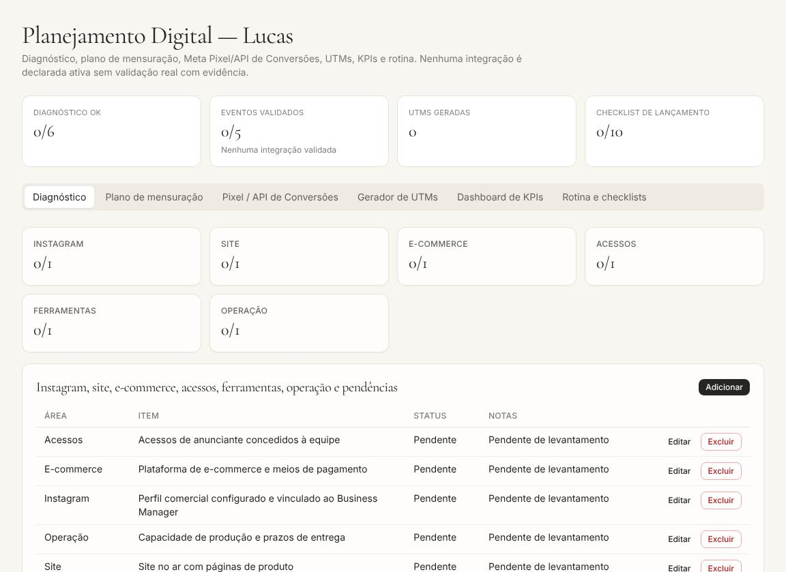
Área de mensuração e dados: diagnóstico, plano de mensuração, Meta Pixel/API de Conversões, UTMs, KPIs reais e rotina. No topo ficam os contadores: diagnóstico OK, eventos validados, UTMs geradas e checklist de lançamento. As tabelas usam os botões Adicionar, Editar e Excluir.
| Aba | Campos e regras |
|---|---|
| Diagnóstico | Área (Instagram, Site, E-commerce, Acessos, Ferramentas, Operação, Pendências), Item *, Status (Pendente, Em levantamento, OK / confirmado, Problema identificado) e Notas. |
| Plano de mensuração | Objetivo *, Evento / métrica *, Responsável, Status (Planejado, Em implementação, Validado) e Evidência. "Validado" exige evidência. |
| Pixel / API de Conversões | Evento *, Gatilho, Parâmetros, Consentimento, Deduplicação, Plano de teste, Status (Planejado, Implementado — não validado, Validado com evidência), Evidência de validação e Ordem. Inclui cartões de referência sobre LGPD, deduplicação e testes. O site não se conecta ao Meta. |
| Gerador de UTMs | URL de destino *, utm_source * (ex.: instagram), utm_medium * (ex.: paid_social), utm_campaign *, utm_content (variação do criativo) e utm_term (público). Gera a URL codificada (minúsculas, sem acentos, espaços viram _). Botões Copiar e Salvar no histórico. |
| Dashboard de KPIs | Só dados reais, digitados manualmente: Data *, Canal *, Alcance, Impressões, Cliques, Investimento, Sessões, Conversões, Receita e Fonte do dado *. Calcula CTR, CPC, CPM, CPA e ROAS reais. O gráfico Real × projetado compara a receita real semanal com o cenário de referência. |
| Rotina e checklists | Checklist diário (o botão Novo dia desmarca tudo) e Checklist de lançamento. Cada item marcado registra quem marcou e quando; Gerenciar itens edita a lista. O Relatório semanal tem Semana (início) *, Hipóteses, Problemas e Recomendações. |
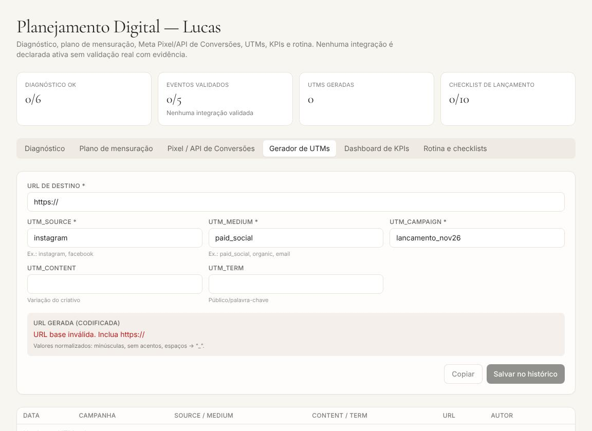
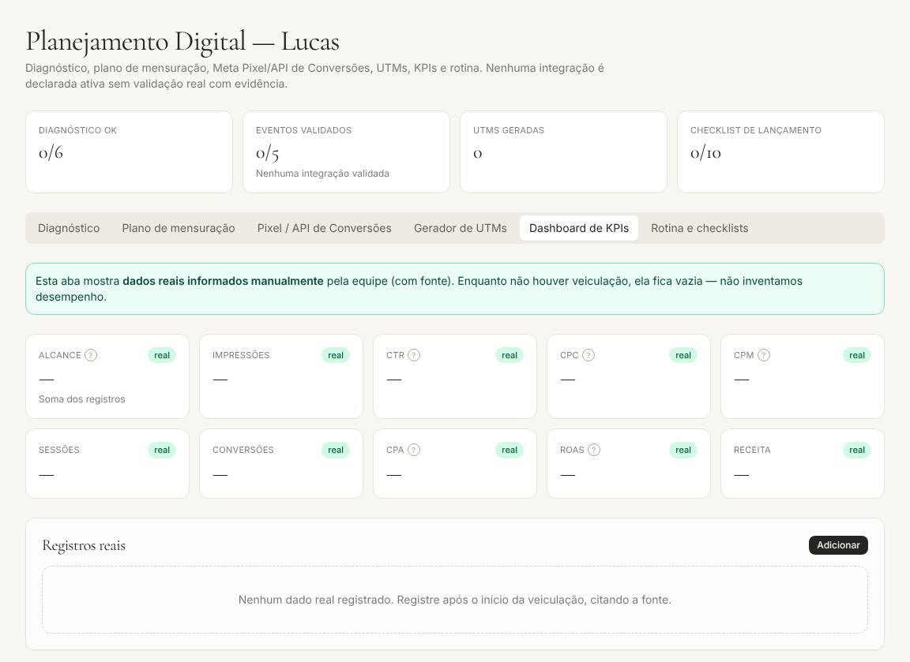
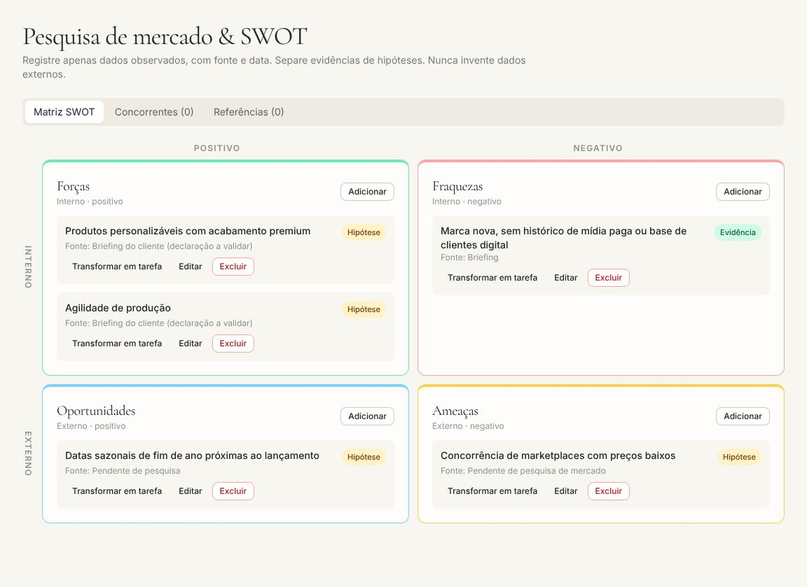
Registre só dados observados, com fonte e data, e separe evidências de hipóteses.
| Aba | Campos e funções |
|---|---|
| Matriz SWOT | Quadrantes Forças e Fraquezas (internos), Oportunidades e Ameaças (externos), cada um com Adicionar. Campos: Quadrante, Descrição *, Base (Evidência ou Hipótese), Evidência e Fonte. Transformar em tarefa cria uma tarefa de Planejamento a partir do item. |
| Concorrentes | Nome *, Site, Redes sociais, Posicionamento, Produtos, Preços observados, Diferenciais, Fontes (URL/print), Data da observação e Observações. → Tarefa cria "Analisar concorrente". O cartão de anexos guarda prints e catálogos. |
| Referências | Referência (formato ABNT) *, URL e Acesso em. Cadastre apenas obras realmente consultadas: elas formam a seção de referências dos documentos exportados. |
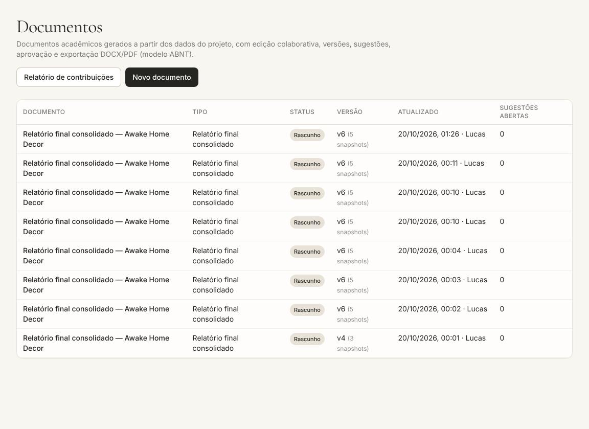
Edição colaborativa com versões, sugestões, aprovação e exportação DOCX/PDF no modelo ABNT. A lista mostra tipo, status (Rascunho, Em revisão, Aprovado), versão, última atualização e sugestões abertas.
Escolha o Modelo e, se quiser, um Título (opcional), depois clique em Gerar. O conteúdo é montado com os dados reais do projeto. O que faltar aparece como "Pendente de preenchimento/validação"; nada é inventado.
Modelos: Relatório final consolidado · Planejamento estratégico · Análise SWOT · Pesquisa de mercado e concorrentes · Público e jornada · Plano de mídia · Planejamento de campanha · Calendário editorial · Plano de mensuração e KPIs · Simulações financeiras e projeções · Ata de reunião · Relatório individual (pede o integrante) · Documento livre.
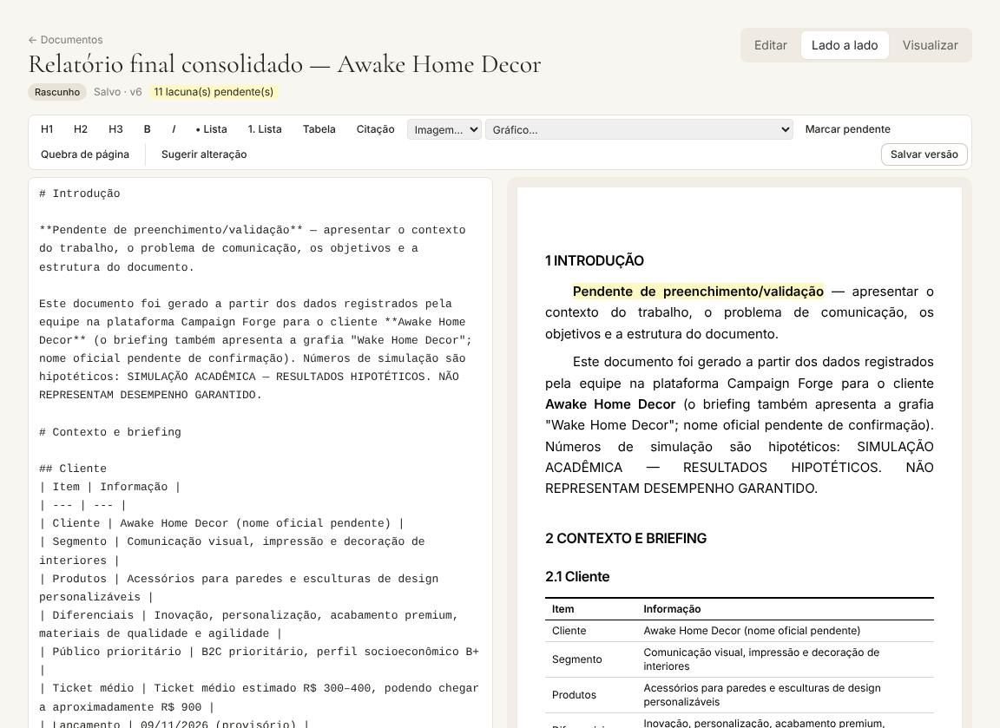
| Botão | Efeito |
|---|---|
| H1 · H2 · H3 | Títulos de seção. Na exportação viram seções numeradas. |
| B · I | Negrito e itálico. |
| • Lista · 1. Lista | Listas com marcadores ou numeradas. |
| Tabela · Citação | Inserem tabela e citação. |
| Imagem… | Insere uma imagem do projeto (PNG, JPEG, GIF) como figura com legenda. |
| Gráfico… | Insere um gráfico vivo do projeto: receita, compras, seguidores ou investimento por mês; receita por semana, trimestre ou semestre; receita por cenário; distribuição da verba; receita por campanha. |
| Marcar pendente | Insere o aviso "Pendente de preenchimento/validação". |
| Quebra de página | Força uma nova página na exportação. |
| Sugerir alteração | Propõe mudança num trecho, sem editar diretamente. |
| Salvar versão | Salva manualmente. |
| Aba | Função |
|---|---|
| Comentários | Discussão com @menções. |
| Sugestões | Mostra a diferença proposta, o autor e o status. Aceitar aplica o texto e credita a nova versão a quem sugeriu; Rejeitar descarta. Quem sugeriu é avisado. |
| Versões | Cada versão com autor, data e caracteres +/−. Comparar mostra as diferenças. Restaurar cria uma nova versão; nada é apagado. |
| Exportar | DOCX ou PDF da versão atual ou da versão aprovada. Se o nome oficial da marca não estiver confirmado, é preciso escolher a grafia e marcar o aviso de ciência. |
Se duas pessoas salvam ao mesmo tempo, abre-se a janela Conflito de edição e nada se perde. Você pode ver as Diferenças, Mesclar manualmente (com o resultado editável), Descartar a minha e usar a do servidor ou Gravar a minha por cima.
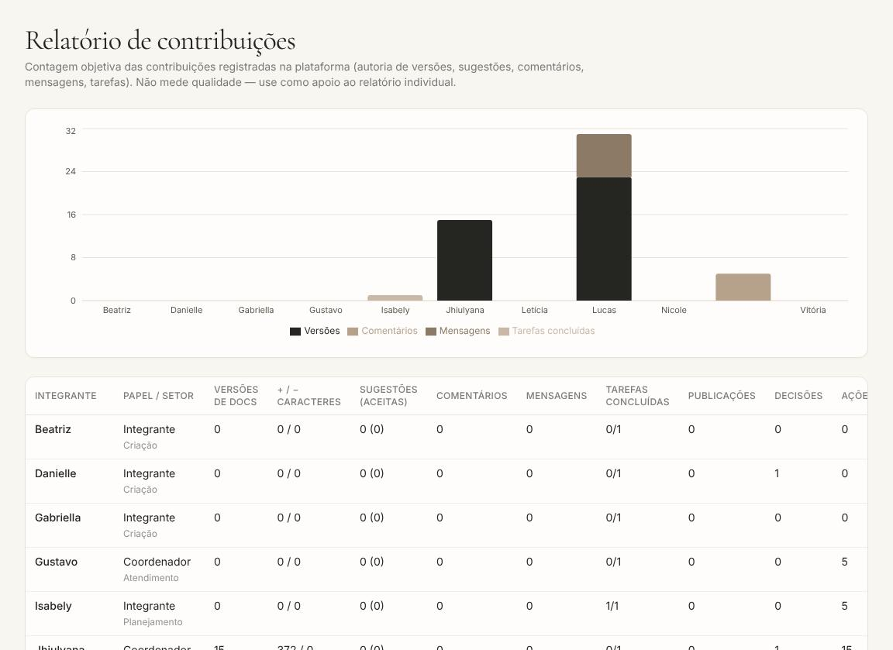
Contagem objetiva do que cada pessoa registrou na plataforma: versões de documentos, caracteres adicionados/removidos, sugestões (aceitas), comentários, mensagens, tarefas concluídas, publicações, decisões e ações. Não mede qualidade; serve de apoio ao relatório individual. Acesse pelo botão Relatório de contribuições em Documentos.
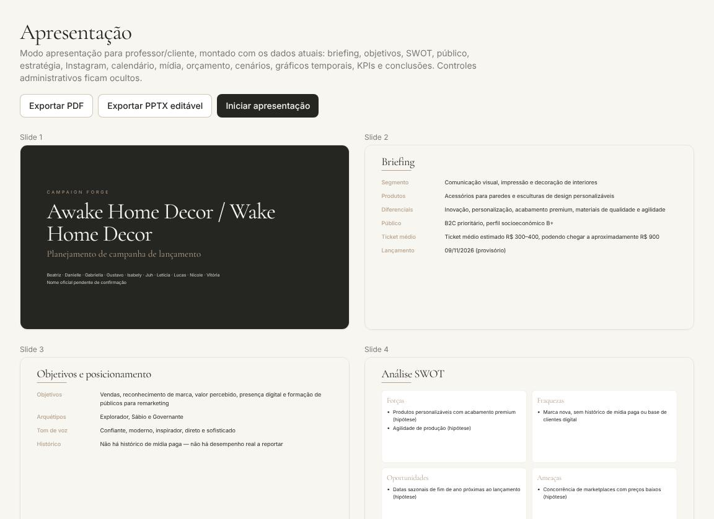
Os slides são montados automaticamente com os dados atuais. Botões: Exportar PDF, Exportar PPTX editável e Iniciar apresentação.
Ordem dos slides:
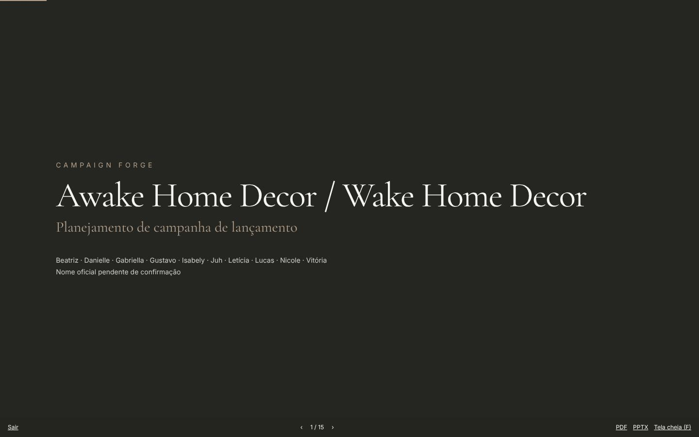
| Tecla | Ação |
|---|---|
| → PageDown Espaço | Próximo slide. |
| ← PageUp | Slide anterior. |
| Home / End | Primeiro / último slide. |
| F | Liga/desliga a tela cheia. |
A barra inferior (Sair, ‹ n/N ›, PDF, PPTX, Tela cheia (F)) some depois de 2,5 segundos sem mexer o mouse. Controles administrativos ficam ocultos durante a apresentação.
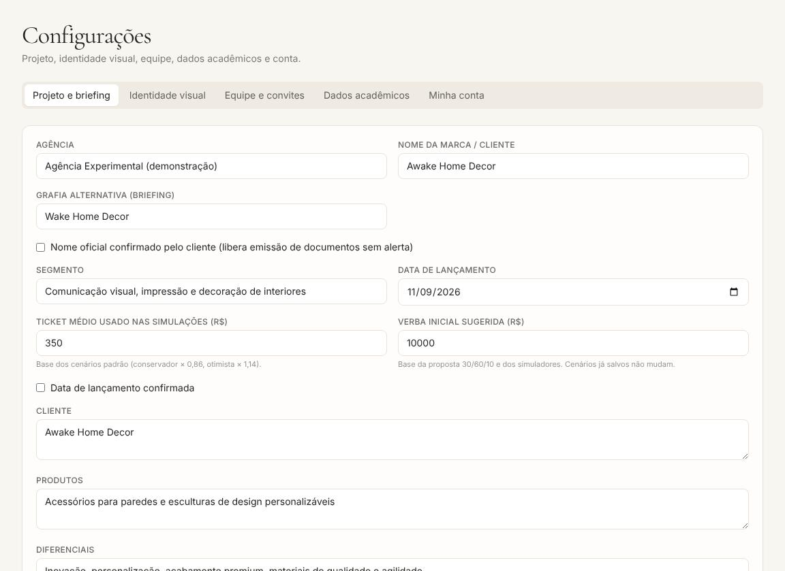
| Campo | Significado |
|---|---|
| Agência | Nome da agência. |
| Nome da marca / cliente · Grafia alternativa | Nome principal e outra grafia citada no briefing. |
| Nome oficial confirmado pelo cliente | Marcado: os documentos saem sem o alerta de nome pendente. |
| Segmento · Data de lançamento · Data confirmada | Dados básicos. "Confirmada" troca "(provisório)" por "(confirmado)". |
| Ticket médio usado nas simulações (R$) | Base dos três níveis: conservador × 0,86, moderado × 1, otimista × 1,14. |
| Verba inicial sugerida (R$) | Base da proposta 30/60/10 e dos padrões dos simuladores. Cenários já salvos não mudam. |
| Briefing | Cliente, Produtos, Diferenciais, Público prioritário, Ticket médio, Lançamento, Objetivos, Arquétipos, Tom de voz e Histórico de mídia. Esses textos alimentam documentos e slides. |
| Excluir projeto | Exige digitar o nome exato do projeto. Não pode ser desfeito. |
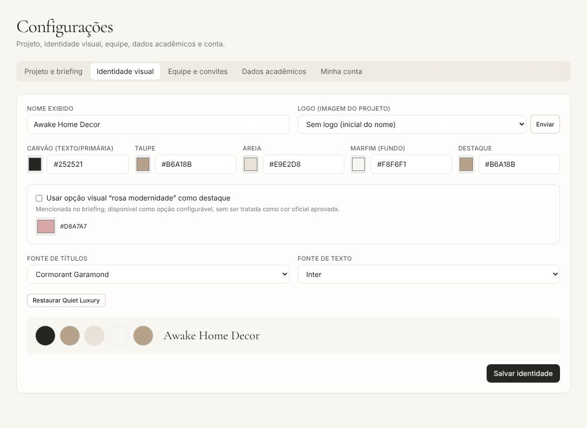
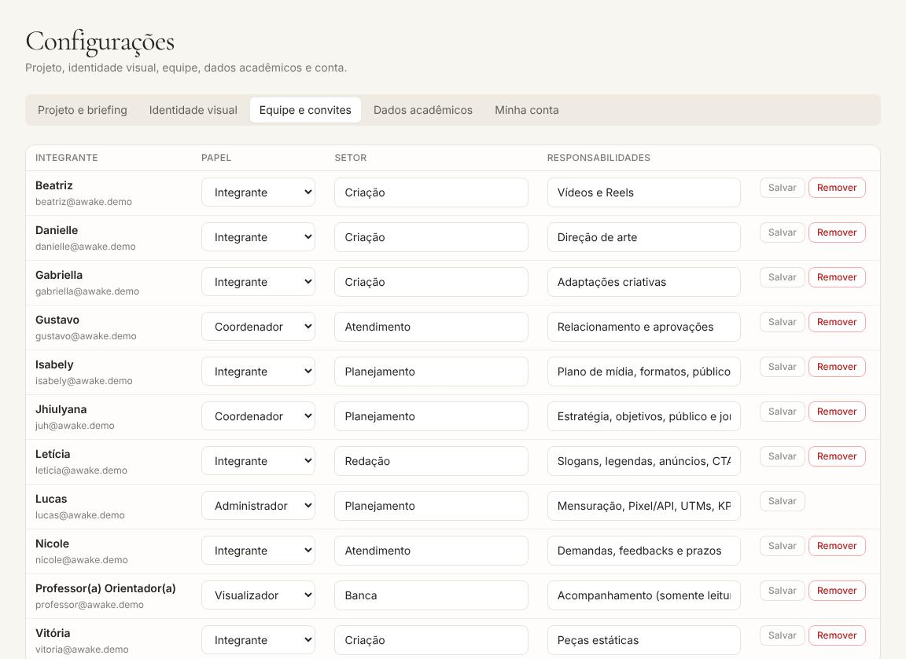
Faculdade/instituição, Curso, Disciplina, Professor(a), Semestre, Integrantes (um por linha), Título do trabalho, Subtítulo, Cidade e Ano. Esses dados vão para a capa e a folha de rosto ABNT. Campos vazios saem como "[Pendente de preenchimento/validação]".
Alterar senha: informe a Senha atual e a Nova senha (mín. 10, letras e números). O site guarda apenas nome, e-mail, papel e o conteúdo produzido pela equipe (LGPD).
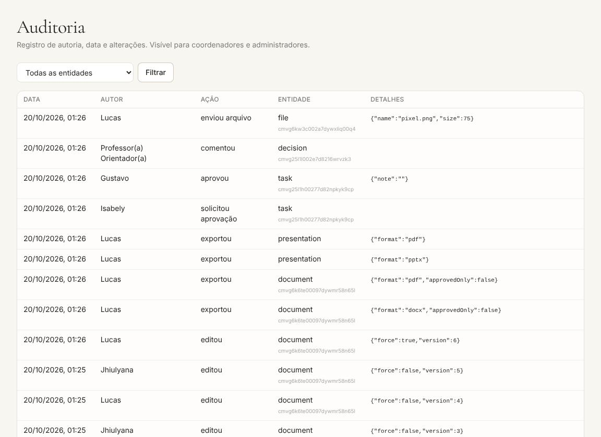
Visível só para coordenadores e administradores. Registra data, autor, ação (criou, editou, excluiu, moveu, comentou, aprovou, exportou…), item afetado e detalhes. Pode ser filtrada por tipo de item e mostra 100 linhas por página.
| Evento | Quem recebe |
|---|---|
| Tarefa atribuída | O novo responsável. |
| Tarefa aguardando aprovação | Coordenadores e administradores. |
| Prazo em até 48h / Tarefa atrasada | O responsável pela tarefa. |
| Menção (@nome) no chat ou em comentários | A pessoa mencionada. |
| Mensagem privada | O destinatário. |
| Nova decisão / mudança de status | Os responsáveis e o criador da decisão. |
| Solicitação de aprovação | Coordenadores e administradores. |
| Item aprovado / reprovado / com ajustes | Quem solicitou. |
| Publicação muda de etapa | O setor da nova etapa. |
| Sugestão em documento / sugestão resolvida | Quem criou e quem editou por último / quem sugeriu. |
Quem causou o evento não recebe a própria notificação.
Uma ordem prática para levar uma campanha do briefing à apresentação final.
| Situação | O que fazer |
|---|---|
| O site demora 30–60 s para abrir | No plano gratuito do Render, o site "dorme" depois de uns 15 minutos sem acesso. O primeiro acesso o acorda. Antes de apresentar, abra o site com um minuto de antecedência. |
| Erro 502 (Gateway inválido) | O servidor está reiniciando ou acordando. Espere 30 segundos e recarregue. Se continuar, veja os Logs no painel do Render. |
| Não consigo aprovar / mover para Aprovado | Só coordenadores e administradores aprovam. Use Solicitar aprovação. |
| "Dependências pendentes" | A tarefa depende de outras que ainda não foram concluídas. Conclua-as primeiro. |
| Não consigo excluir um item | Só o autor ou coordenadores podem excluir. Itens de listas simples só coordenadores excluem. |
| Não consigo alterar um cenário, verba ou documento | Itens aprovados ficam travados. Duplique o cenário, crie uma nova proposta de verba ou peça para reabrir o documento. |
| Arquivo recusado no envio | Confira o tipo (imagens, PDF, MP4, DOCX, XLSX, PPTX, TXT, CSV) e o tamanho máximo. SVG não é aceito. |
| O documento exportado tem aviso de nome pendente | Em Configurações, marque "Nome oficial confirmado pelo cliente". |
| A capa do documento mostra "[Pendente…]" | Preencha Configurações → Dados acadêmicos. |
| Esqueci a senha e não chega e-mail | Sem SMTP configurado, peça ao administrador um novo convite ou a recuperação pelo log do servidor. |
| "Fonte externa documentada" não salva | Essa origem exige referência completa (autor, título, URL, data). |
| Os números do Instagram mudaram sozinhos | Se os seguidores vêm "do cenário de referência", eles acompanham o cenário aprovado ou o Moderado. Para um valor fixo, use "Número informado". |